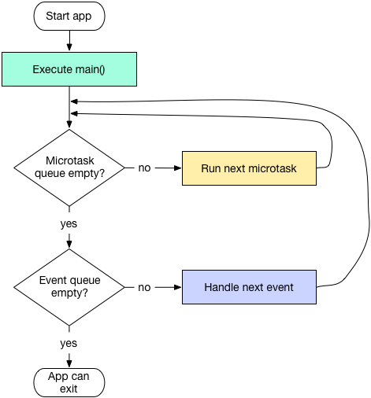

Dart线程模型及异常捕获
Dart单线程模型
在Java和OC中，如果程序发生异常且没有被捕获，那么程序将会终止，但在Dart或JavaScript中则不会，究其原因，这和它们的运行机制有关系，Java和OC都是多线程模型的编程语言，任意一个线程触发异常且没被捕获时，整个进程就退出了。但Dart和JavaScript不同，它们都是单线程模型，运行机制很相似(但有区别)，下面我们通过Dart官方提供的一张图来看看dart大致运行原理：

Dart 在单线程中是以消息循环机制来运行的，其中包含两个任务队列，一个是“微任务队列” microtask queue，另一个叫做“事件队列” event queue。从图中可以发现，微任务队列的执行优先级高于事件队列。
现在我们来介绍一下Dart线程运行过程，如上图中所示，入口函数 main() 执行完后，消息循环机制便启动了。首先会按照先进先出的顺序逐个执行微任务队列中的任务，当所有微任务队列执行完后便开始执行事件队列中的任务，事件任务执行完毕后再去执行微任务，如此循环往复，生生不息。
在Dart中，所有的外部事件任务都在事件队列中，如IO、计时器、点击、以及绘制事件等，而微任务通常来源于Dart内部，并且微任务非常少，之所以如此，是因为微任务队列优先级高，如果微任务太多，执行时间总和就越久，事件队列任务的延迟也就越久，对于GUI应用来说最直观的表现就是比较卡，所以必须得保证微任务队列不会太长。值得注意的是，我们可以通过Future.microtask(…)方法向微任务队列插入一个任务。
在事件循环中，当某个任务发生异常并没有被捕获时，程序并不会退出，而直接导致的结果是当前任务的后续代码就不会被执行了，也就是说一个任务中的异常是不会影响其它任务执行的。
Flutter异常捕获
Dart中可以通过try/catch/finally来捕获代码块异常，这个和其它变成语言类似，，如果读者不清楚，可以查看Dart语言文档，不在赘述，下面我们看看Flutter中的异常捕获。
Flutter框架异常捕获
Flutter 框架为我们在很多关键的方法进行了异常捕获。这里举一个例子，当我们布局发生越界或不和规范时，Flutter就会自动弹出一个错误界面，这是因为Flutter已经在执行build方法时添加了异常捕获，最终的源码如下：
void performRebuild() {
...
try {
//执行build方法
built = build();
} catch (e, stack) {
// 有异常时则弹出错误提示
built = ErrorWidget.builder(_debugReportException('building $this', e, stack));
}
...
}
可以看到，在发生异常时，Flutter默认的处理方式时弹一个ErrorWidget，但如果我们想自己捕获异常并上报到报警平台的话应该怎么做？我们进入_debugReportException()方法看看：
FlutterErrorDetails _debugReportException(
String context,
dynamic exception,
StackTrace stack, {
InformationCollector informationCollector
}) {
//构建错误详情对象
final FlutterErrorDetails details = FlutterErrorDetails(
exception: exception,
stack: stack,
library: 'widgets library',
context: context,
informationCollector: informationCollector,
);
//报告错误
FlutterError.reportError(details);
return details;
}
我们发现，错误是通过FlutterError.reportError方法上报的，继续跟踪：
static void reportError(FlutterErrorDetails details) {
...
if (onError != null)
onError(details); //调用了onError回调
}
我们发现onError是FlutterError的一个静态属性，它有一个默认的处理方法 dumpErrorToConsole，到这里就清晰了，如果我们想自己上报异常，只需要提供一个自定义的错误处理回调即可，如：
void main() {
FlutterError.onError = (FlutterErrorDetails details) {
reportError(details);
};
...
}
这样我们就可以处理那些Flutter为我们捕获的异常了，接下来我们看看如何捕获其它异常。
其它异常捕获
在Flutter中，还有一些Flutter没有为我们捕获的异常，如调用空对象方法异常、Future中的异常。在Dart中，异常分两类：同步异常和异步异常，同步异常可以通过try/catch捕获，而异步异常则比较麻烦，如下面的代码是捕获不了Future的异常的：
try{
Future.delayed(Duration(seconds: 1)).then((e) => Future.error("xxx"));
}catch (e){
print(e)
}
Dart中有一个runZoned 方法，可以给执行对象指定一个zone，它接受一个可选的onError参数，定义如下：
R runZoned<R>(R body(), {
Map zoneValues,
ZoneSpecification zoneSpecification,
Function onError,
})
如果开发者提供了onError回调或者，通过ZoneSpecification.handleUncaughtError指定了错误处理方法，那么这个zone将会变成一个error-zone，该error-zone中发生未捕获异常(无论同步还是异步)时都会调用开发者提供的回调，如：
runZoned(() {
runApp(MyApp());
}, onError: (Object obj, StackTrace stack) {
var details=makeDetails(obj,stack);
reportError(details);
});
这样一来，结合上面的FlutterError.onError我们就可以捕获我们Flutter应用中全部错误了！需要注意的是，error-zone内部发生的错误是不会跨越当前error-zone的边界的，如果想跨越error-zone边界去捕获异常，可以通过共同的“源”zone来捕获，如：
var future = new Future.value(499);
runZoned(() {
var future2 = future.then((_) { throw "error in first error-zone"; });
runZoned(() {
var future3 = future2.catchError((e) { print("Never reached!"); });
}, onError: (e) { print("unused error handler"); });
}, onError: (e) { print("catches error of first error-zone."); });
我们最终的异常捕获和上报代码如下：
void reportError(FlutterErrorDetails details){
... //上报错误逻辑
}
FlutterErrorDetails makeDetails(Object obj, StackTrace stack){
...// 构建错误信息
}
void main() {
FlutterError.onError = (FlutterErrorDetails details) {
reportError(details);
};
runZoned(() {
runApp(MyApp());
}, onError: (Object obj, StackTrace stack) {
var details=makeDetails(obj,stack);
reportError(details);
});
}